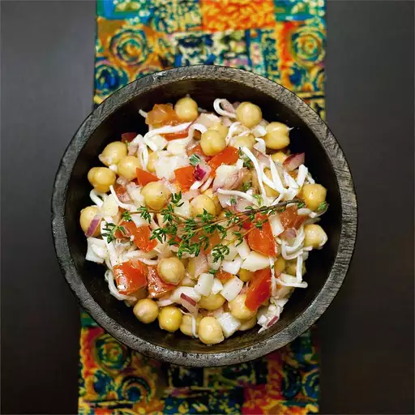

Busy Day Lunch Salad

You can add capers, green olives, or extra hearts of palm to this recipe. They will all give it an extra kick.
Ingredients
- 1 (15 ounce) can garbanzo beans, drained and rinsed
- 1 tomato, cut into small dice
- ¼ red onion, minced
- 1 canned heart of palm, minced
- ⅓ cup grated reduced-fat mozzarella cheese
- 4 sprigs fresh thyme leaves
- 2 tablespoons extra-virgin olive oil
- 1 tablespoon fresh lemon juice
- salt and pepper to taste
Directions
- Step 1
Toss the garbanzo beans, tomato, onion, heart of palm, mozzarella cheese, thyme, olive oil, and lemon juice together in a bowl until evenly mixed. Season with salt and pepper and retoss.